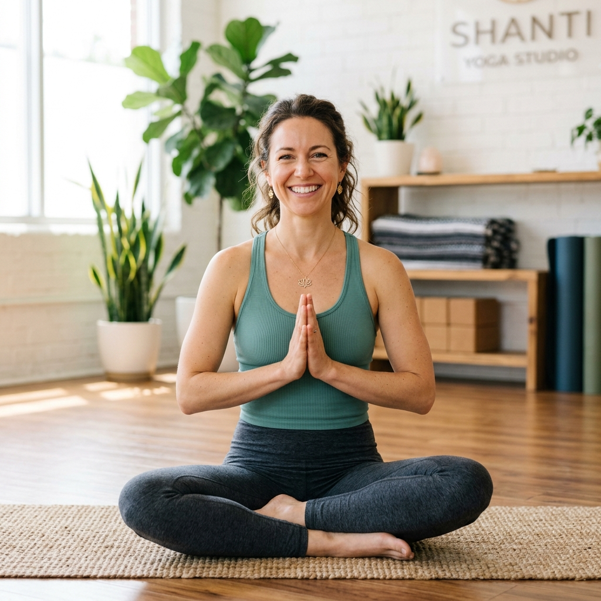
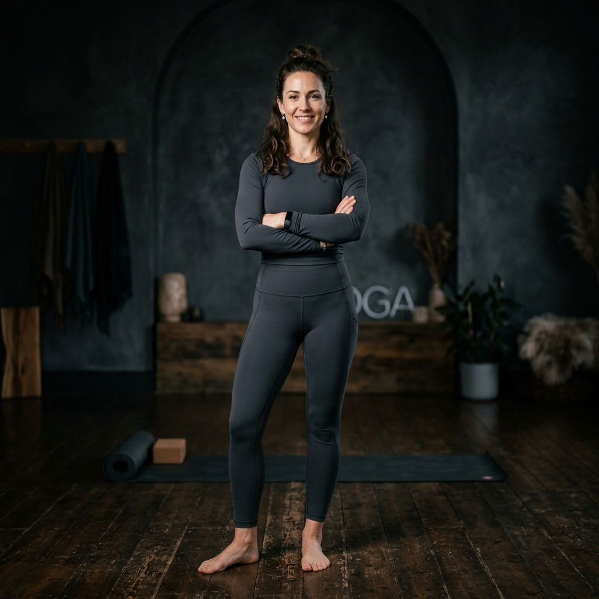
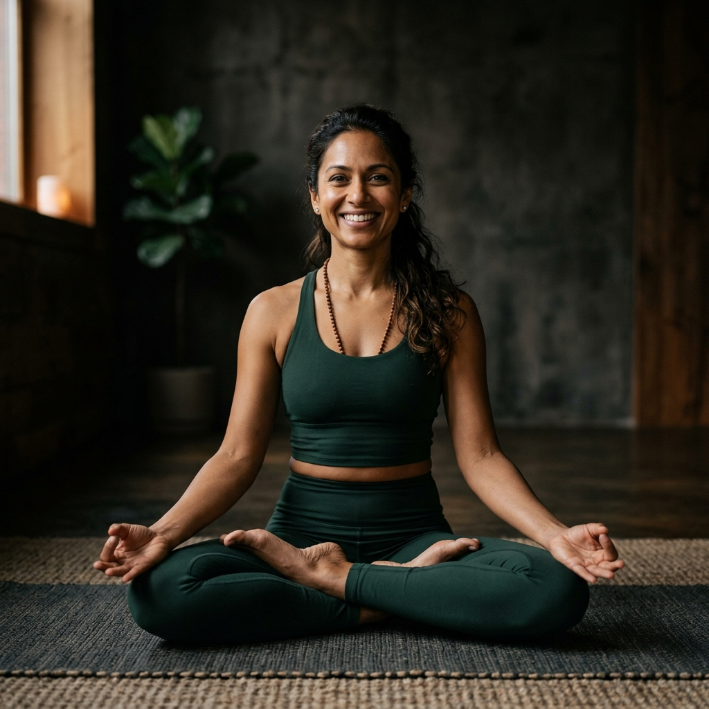
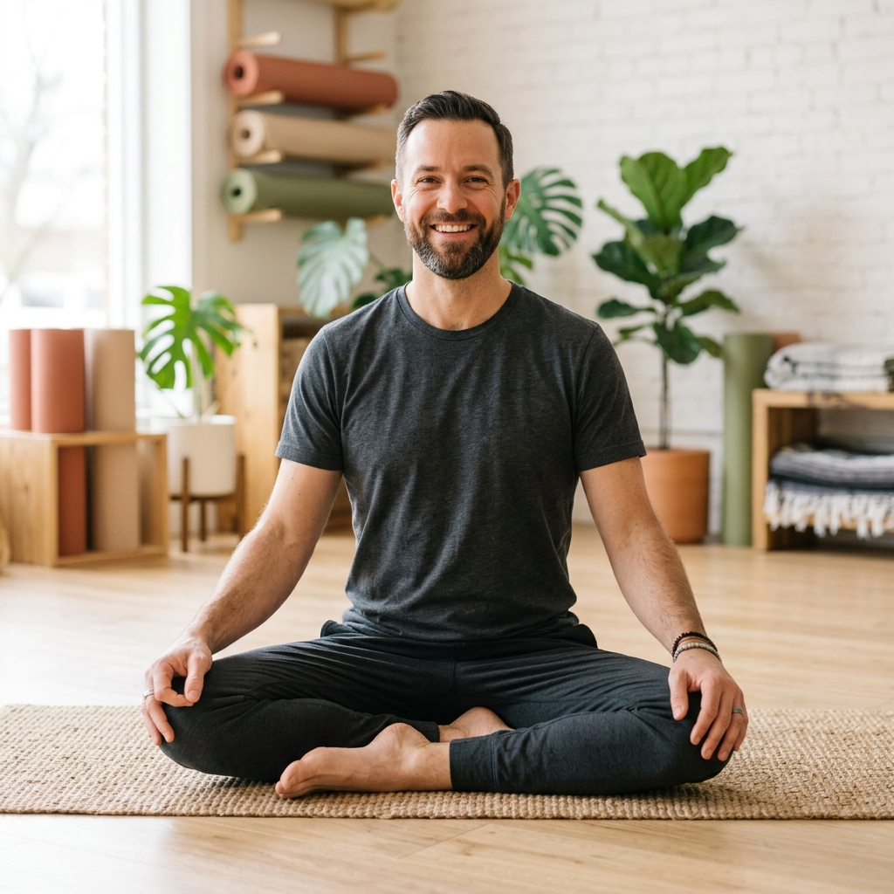
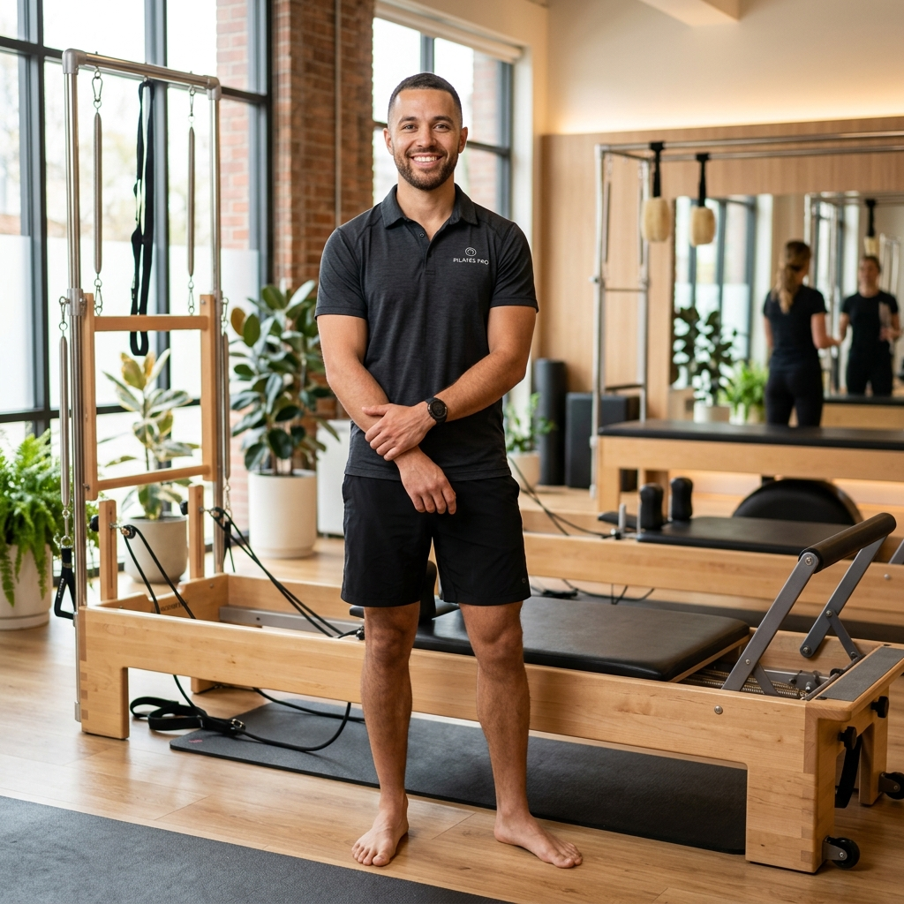

Crafted with Expertise,
Led by Grace
Meet our experienced instructors who guide your practice with compassion and deep wisdom.
OUR COLLECTIVE
The Souls of Root
Our guides are more than just instructors; they are architects of stillness and resilience. Each member of our collective has been hand-selected for their deep technical expertise, anatomical precision, and unique ability to bridge the gap between ancient wisdom and modern performance. From global certifications to decades of lived experience, they are here to ensure your journey is safe, powerful, and deeply transformative.

Sarah Jenkins
Lead Vinyasa & Hatha Guide
With over 12 years of practice across India and Bali, Sarah brings a deep anatomical understanding to her fluid Vinyasa flows. Her classes focus on mindful transitions.

Maya Thompson
Power Yoga Specialist
Maya’s background in professional dance informs her teaching style—dynamic, rhythmic, and highly intentional. She focuses on building functional core stability.

Emma Davis
Meditation & Restorative
Emma specializes in the "Aura State"—a deep level of restorative rest. Her sessions are a blend of Yin yoga and guided visualization for a complete nervous system reset.

David Lee
Mindful Movement Architect
David combines traditional wisdom with modern mobility training to ensure longevity and grace in every practitioner's journey. Every posture is a step back to yourself.

Sophia Chen
Outdoor & Breathwork Guide
Sophia is our specialist for outdoor immersion. She believes that nature is the ultimate meditation teacher. Her sessions synchronize your rhythm with the natural world.

James Wilson
Pilates & Structural Expert
James brings a technical, structural focus to our core classes. With a background in kinesiology, he ensures that every movement is anatomically sound and resilient.